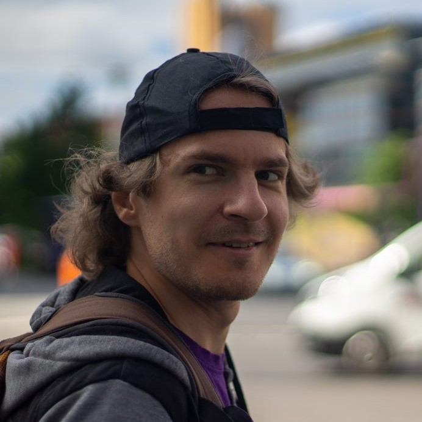

About me
Hi! I’m Adam from Wrocław, Poland and this is the portfolio page. I’ll put here various things I do. It’s not focused on one specific field, though it will be mostly related to areas where music/audio/visuals/code intersect.
Short history: Back in the early 2000s when I was at school in a small town of Grodków I encountered Macromedia Flash 5. That was my first contact with programming. I was tinkering with it, trying bits of code, bits of animations, trying to make simple games. That was quite an inspiring piece of software. You could really easily do animated or interactive thing. Now, I think that it was quite an influence - in many areas I’ve tried over the years the ‘audio/visual output’ was always an important element. In the meantime I started to learn the piano and music was becoming the second important thing. I was figuring out how to combine the two areas - music and tech. As a result I went to an university to become an audio engineer. There were some turbulences and I’ve tried couple of other things such as microcontroller programming, audio processing using DSPs and eventually ended up programming computer games as a profession.
Within this mixture of things I’ve always enjoyed experimentation. Especially related to producing sound or visuals with some made up methods: programming sound synthesizers, programs that render an image, realtime visuals reactive to the music, and such. This page is mostly about it - selection of side projects combined in a single place.